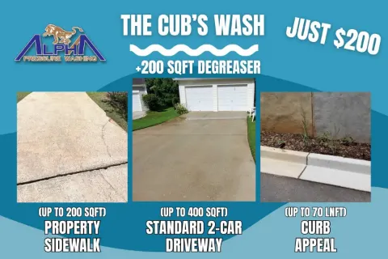
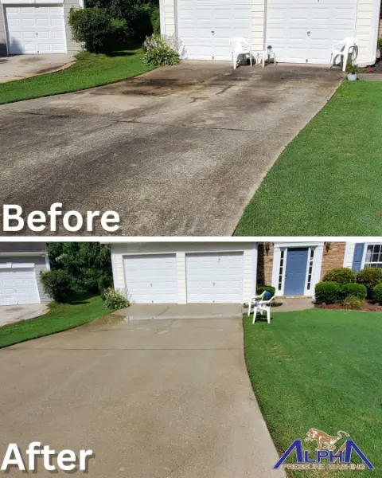
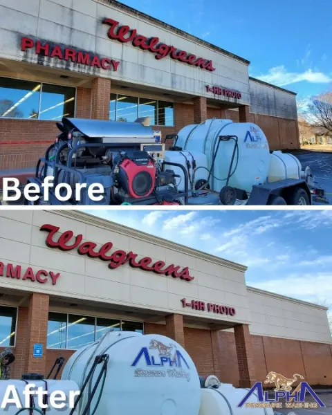
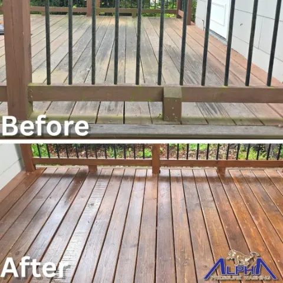
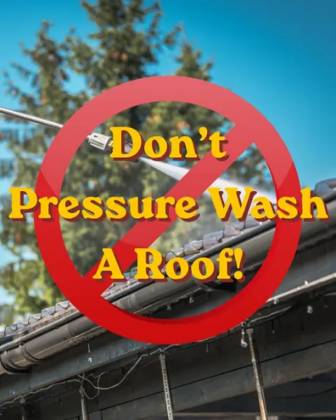
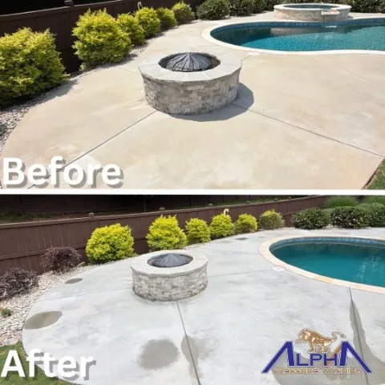

Case study · Marketing & operations · 2026
Alpha Pressure Washing
Operations and marketing coordinator for a local pressure-washing company: a CRM migration in the first month, a restructured price book, fifteen SOPs, a marketing plan with a strategy doc per channel, and the creative that got watched.
- Role
- Operations & Marketing Coordinator
- Timeline
- 2026
- Stack
- 2,500+client records migrated, Housecall Pro to Jobber
- 3,700+jobs migrated with histories merged
- 15standard operating procedures written, in an SOP book I built
- 48Google Business Profile posts planned, written, and UTM-tagged
- 1,000+views on Facebook Reels for a local service company
- 2features suggested to SimplifyLocal that shipped
The Brief
A home-services company that needed marketing and operations at the same time, from one person. The marketing half was content that gets watched and listings that get found. The operations half was a CRM that had outgrown the tool it lived in.
What I Did
The CRM migration
In the first month I single-handedly moved the company from Housecall Pro to Jobber: 2,500+ client records and 3,700+ jobs formatted for a clean import, hundreds of duplicate records found and removed, and job histories merged so a customer's past work followed them into the new system. Then I built and launched service package plans on top of it to raise average customer value and recurring revenue.
Restructuring the price book
The company's online booking listed services by internal trade category (exterior cleaning, smart home, concrete and asphalt), which isn't how a homeowner thinks. A homeowner thinks "I need my driveway washed." I wrote a proposal for leadership that rebuilt the price book around the customer: residential and commercial split at the first click; residential organized into package plans (five tiers with lion-themed names, each a clear upgrade from the last, with a top tier that exists partly to anchor the one below it), à la carte services always priced above the equivalent package, add-ons at checkout, and seasonal services (holiday lights) that only appear in their booking window. Commercial work goes to a scoped quote form instead of instant booking. The booking flow itself became nine steps, with the zip-code check before any personal data is collected and a trust-signal screen before confirmation.
Content that gets watched
Facebook Reels that pulled in thousands of views for a company whose entire product is a before-and-after, alongside before/after photo content for Nextdoor, Yelp, and Facebook: mobile-first ad creatives for residential and commercial audiences, Google Business Profile posts on a near-daily cadence, Local Services Ads imagery, an educational series ("Don't Pressure Wash a Roof"), and the package-plan cards that sell the tiers above.
Local SEO and inbound
Google Business Profile publishing through SimplifyLocal; a name/address/phone consistency audit across every listing; UTM-tagged campaign links tracked in Google Analytics so the company knows which post produced which call. On the phone side, inbound inquiries turned into booked estimates.
Writing the operation down
None of this survives staff turnover unless it's documented, so I built the company an operations hub in Notion. An SOP book of fifteen procedures, all mine: the service-territory reference and phone booking flow, special pricing and territory policy, repeat and loyal-customer accounts, a procedure-change protocol, posting standards for Google Business Profile, Facebook, Instagram, TikTok, Yelp, and Nextdoor, invoicing and payment collection, job photo documentation, review requests, pipeline and lead management, and square-footage capture in Jobber. Alongside it, a master services catalog (every residential, seasonal, and commercial service, plus new services ranked by value and volume for the equipment already on the truck) and a marketing plan with channels tiered by cost and speed and a strategy doc for each: short-form video, Nextdoor, Facebook groups and lead ads, SMS to past customers, referrals, review automation, lead platforms, local SEO pages, yard signs, vehicle wraps, EDDM, an email newsletter, a NAP directory reference, a GBP post-writing guide, Summer 2026 Google Ads and Meta campaign plans, and a competitive analysis against the main local rival. The GBP posts ran off a 48-post calendar, each with copy, media, and a UTM-tagged booking link.
A side effect
Along the way I suggested two features to SimplifyLocal as a customer, rich text editing and a before/after slider builder. Both shipped.
Creative
A sample of the marketing creative from June 2026: package-plan cards, before/after ad templates for Facebook and Nextdoor, an educational post, and Local Services Ads imagery. Shown at their native social sizes.





